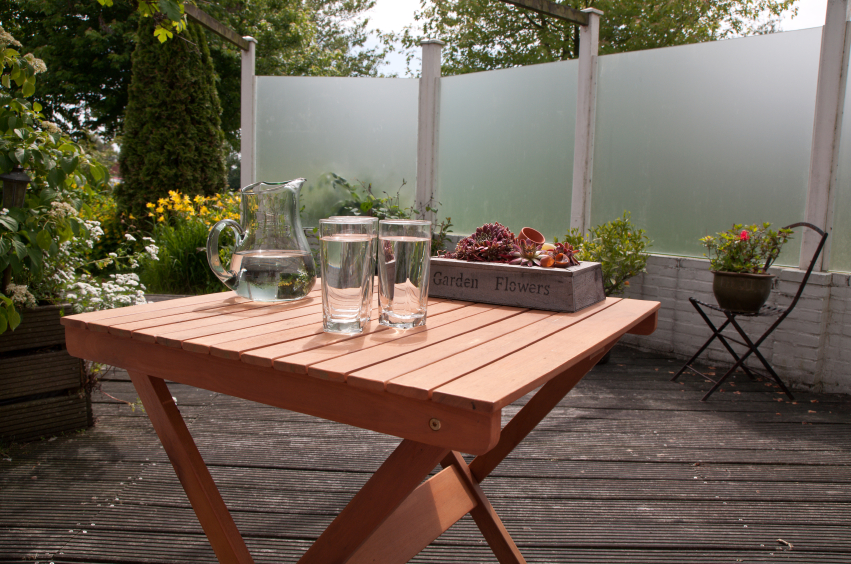

Thermische breuk in glas: hoe ontstaat het en hoe voorkom je het?
Niet één hoge temperatuur, maar temperatuurverschil in dezelfde ruit vormt het risico. Een barst zonder zichtbare inslag voelt onverklaarbaar, maar glas kan breken zonder bal, steen of botsing.

Wat is thermische breuk?
Bij een thermische breuk warmt één deel van de ruit sterker op dan een ander deel. Het glas zet daardoor ongelijk uit en de spanning kan te groot worden. Wij zien deze vraag regelmatig langskomen: een ruit die zomaar barst, zonder dat er ooit iets tegenaan is gekomen.
Glas zet een klein beetje uit wanneer het warmer wordt. Zolang de hele ruit ongeveer gelijkmatig opwarmt, levert dat meestal geen probleem op. Het risico ontstaat wanneer delen van dezelfde ruit sterk van temperatuur verschillen, bijvoorbeeld een zonnig middendeel terwijl de rand in de schaduw en koeler blijft. Hoe groot dat risico is, hangt niet alleen af van de buitentemperatuur. Ook het glastype, de kwaliteit van de glasrand, de plaatsing, de afmetingen en de manier waarop de ruit wordt verwarmd of afgedekt spelen mee.
Situaties die het temperatuurverschil kunnen vergroten
In de praktijk komen we een paar situaties steeds weer tegen. Gedeeltelijke schaduw is er een van: een zonnescherm, balkonrand, boom, kozijnstijl of diepe negge kan een scherp verschil maken tussen zonnige en beschaduwde delen van dezelfde ruit. Raamfolie, stickers of verf spelen een vergelijkbare rol, want donkere of warmte-absorberende materialen laten een deel van het glas extra opwarmen, en niet iedere folie is geschikt voor iedere glasopbouw. Ook gordijnen en jaloezieën die strak tegen het glas hangen kunnen voor problemen zorgen: de warmte blijft dan tussen raamdecoratie en glas hangen, vooral wanneer de lucht nauwelijks circuleert.
Datzelfde geldt voor een verwarming die dicht bij het raam staat. Een radiator, convector, heater of hete luchtstroom kan lokaal veel warmte op het glas richten. Voorwerpen vlak achter de ruit, zoals een donkere bank, kast, kussen of decoratiestuk, nemen warmte op en stralen die weer terug naar het glas. En een zonverwarmde ruit plotseling plaatselijk afkoelen met koud water kan de temperatuurverschillen juist sterk vergroten in plaats van verkleinen.
Hoe herken je een mogelijke thermische breuk?
Een thermische breuk begint vaak bij de rand van het glas. De eerste breuklijn loopt daar veelal ongeveer haaks op de rand en krijgt verderop een grilliger verloop. Dat patroon kan een aanwijzing zijn, maar is geen sluitend bewijs, want een beschadigde glasrand, mechanische belasting of kleine inslag kan een vergelijkbaar beeld veroorzaken. Laat de oorzaak daarom altijd door een vakman beoordelen.
Zo verklein je de kans op thermische breuk
De meeste maatregelen komen neer op gezond verstand en een beetje afstand houden. Wij raden aan om gordijnen, jaloezieën en andere raamdecoratie niet strak tegen het glas te hangen en te zorgen voor voldoende luchtcirculatie. Houd verwarmingselementen en gerichte hete lucht op afstand van de ruit, en plak geen folie, posters, stickers of donkere vlakken op het glas zonder eerst te controleren of dat voor de betreffende glasopbouw is toegestaan. Zet ook geen grote of donkere meubelstukken direct tegen het raam, en gebruik nooit een koude waterstraal op een ruit die door de zon flink is opgewarmd. Verwacht je veel zonbelasting, gedeeltelijke beschaduwing of een bijzondere toepassing, bespreek dan vooraf met ons of thermisch gehard glas wenselijk is.
Kan thermisch gehard glas het probleem voorkomen?
Thermisch gehard glas is door een gecontroleerde warmtebehandeling beter bestand tegen temperatuurverschillen dan gewoon floatglas. We kiezen er daarom vaak voor wanneer een verhoogd thermisch risico wordt verwacht, bijvoorbeeld bij grote glasoppervlakken zoals beschreven in ons artikel over duurzaam glas. Het is echter geen vrijbrief om elke folie, verwarming of afdekking zonder overleg toe te passen. De volledige situatie blijft bepalend, en dat geldt ook wanneer je twijfelt welk glastype eigenlijk bij je woning past.
Is een thermische breuk een productfout?
Niet automatisch. Een thermische breuk ontstaat door spanningen als gevolg van temperatuurverschillen. Of een fabrikant, glaszetter, gebruiker of andere partij verantwoordelijk is, hangt af van de oorzaak, de glaskeuze, de plaatsing, eventuele randbeschadiging en het gebruik na montage. Laat daarom eerst de ruit en de omstandigheden goed vastleggen voordat er conclusies worden getrokken over garantie of aansprakelijkheid.
Wat doe je wanneer je een barst ontdekt?
Zet eerst het gebied rond de ruit af en houd zelf ook afstand. Maak vervolgens overzichts- en detailfoto's, inclusief het beginpunt van de barst bij de glasrand, en noteer het tijdstip en de omstandigheden: zon, schaduw, verwarming, raamfolie en eventuele recente werkzaamheden. Verwijder niets van de ruit voordat de situatie is beoordeeld, tenzij dit voor directe veiligheid noodzakelijk is en door een professional wordt uitgevoerd. Neem daarna contact op met de glaszetter, de leverancier en zo nodig de verzekeraar.
Een barst of risicovolle situatie laten beoordelen?
Thermische breuk gaat niet simpelweg over "te warm glas". Het gaat om temperatuurverschillen binnen één ruit. Door warmtebronnen, raamdecoratie, folie, voorwerpen en schoonmaakgedrag zorgvuldig op het glastype af te stemmen, beperk je het risico aanzienlijk. In situaties met een voorspelbaar hoger risico is de juiste glaskeuze, al vóór de bestelling, de belangrijkste preventiemaatregel.
Stuur foto's van de volledige ruit, het breukpatroon en de omgeving rond het raam via ons contactformulier. Vermeld ook of er folie, raamdecoratie, verwarming of gedeeltelijke schaduw aanwezig is, dan kunnen wij je gericht adviseren over de vervolgstap.